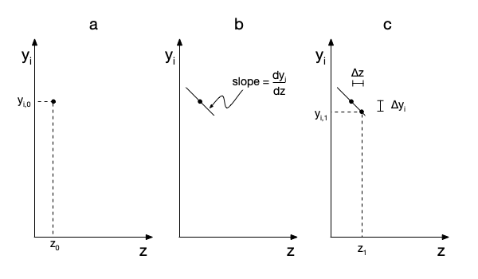

Appendix I — Solving Initial-Value ODEs
This appendix provides a simplified introduction to numerical solution of sets of coupled, initial-value ordinary differential equations (IVODEs). It is not specific to any one computer program or language. Students seeking a more complete understanding should consult a numerical methods textbook or take a course on numerical methods.
I.1 The Nature of a Numerical Solution of an Initial-Value ODE
When an IVODE is solved analytically, the solution is a function that describes how the dependent variable varies as a function of the independent variable. For example, the solution of the IVODE shown in Equation I.1, with the initial values of \(x\) and \(y\) given in Equation I.2, is Equation I.3.
\[ \frac{dy}{dx} = 2x \tag{I.1}\]
\[ y \Bigr\rvert_{x=3} = 10 \tag{I.2}\]
\[ y = x^2 + 1 \tag{I.3}\]
When an IVODE is solved numerically, there are two significant differences. First, the solution is not an analytical function, it is a set of values of \(x\), starting at the initial value, along with a second set of the corresponding values of \(y\). A numerical solution of Equation I.1, with the initial values given in Equation I.2 is shown in Table I.1.
| x | y |
|---|---|
| 3.0 | 10.00 |
| 3.1 | 10.61 |
| 3.3 | 11.89 |
| 3.4 | 12.56 |
| 3.6 | 13.96 |
| 3.7 | 14.69 |
| 4.0 | 17.00 |
| 4.5 | 21.25 |
The second significant difference is that the numerical solution spans a finite range of \(x\) values. For example, the numerical solution shown in Table I.1 spans the range from \(x=3\) to \(x=4.5\), or equivalently, the range from \(y=10.00\) to \(y=21.25\). In contrast, the analytical solution in Equation I.3 yields the value of \(y\) for any value of \(x\).
I.2 Writing IVODEs as Matrix and Vector Equations
The sets IVODEs that will be solved in Reaction Engineering Basics will be first-order differential equations, and there will be no products, quotients or powers of the derivatives. Equations I.4, I.5, I.6 and I.7 are an example of a set of IVODEs that might need to be solved to find the values of \(\dot n_A\), \(\dot n_Z\), \(\dot V\) and \(T\) at times between \(t=0\) and some later time, \(t_f\).
\[ \frac{V}{\dot V}\frac{d\dot n_A}{dt} - \frac{\dot n_A V}{\dot V^2}\frac{d\dot V}{dt} = \dot n_{A,in} - \dot n_A - Vr \tag{I.4}\]
\[ \frac{V}{\dot V}\frac{d\dot n_Z}{dt} - \frac{\dot n_Z V}{\dot V^2}\frac{d\dot V}{dt} = \dot n_{Z,in} - \dot n_Z + Vr \tag{I.5}\]
\[ RT\frac{d\dot n_A}{dt} + RT\frac{d\dot n_Z}{dt} - P\frac{d\dot V}{dt} + \left(\dot n_A + \dot n_Z\right)R\frac{dT}{dt} = 0 \tag{I.6}\]
\[ \frac{V\left(\dot{n}_A \hat{C}_{p,A} + \dot{n}_Z \hat{C}_{p,Z}\right)}{\dot{V}} \frac{dT}{dt} = - \left( \dot{n}_{A,in} \hat{C}_{p,A} + \dot{n}_{Z,in} \hat{C}_{p,Z} \right)\left(T - T_{in}\right) - V r \Delta H \tag{I.7}\]
Notice that the IVODEs have been written with all of the derivatives on one side of the equation and the remaining terms on the other side. The set of reactions presented in Equations I.8, I.9, I.10, and I.11 are a generalization of the sets of IVODEs that must be solved in Reaction Engineering Basics. In those equations, \(y_1\), \(y_2\), \(y_3\), and \(y_4\) are called the dependent variables; they are each functionally dependent upon only \(x\), which is called the independent variable. The coefficients, \(m_{1,1}\), \(m_{1,2}\), etc., as well as \(g_1\), \(g_2\), \(g_3\), and \(g_4\) each may be a function of \(x\), \(y_1\), \(y_2\), \(y_3\), and \(y_4\).
\[ m_{1,1}\frac{dy_1}{dx} + m_{1,2}\frac{dy_2}{dx} + m_{1,3}\frac{dy_3}{dx} + m_{1,4}\frac{dy_4}{dx} = g_1 \tag{I.8}\]
\[ m_{2,1}\frac{dy_1}{dx} + m_{2,2}\frac{dy_2}{dx} + m_{2,3}\frac{dy_3}{dx} + m_{2,4}\frac{dy_4}{dx} = g_2 \tag{I.9}\]
\[ m_{3,1}\frac{dy_1}{dx} + m_{3,2}\frac{dy_2}{dx} + m_{3,3}\frac{dy_3}{dx} + m_{3,4}\frac{dy_4}{dx} = g_3 \tag{I.10}\]
\[ m_{4,1}\frac{dy_1}{dx} + m_{4,2}\frac{dy_2}{dx} + m_{4,3}\frac{dy_3}{dx} + m_{4,4}\frac{dy_4}{dx} = g_4 \tag{I.11}\]
While four equations are being used here for illustration purposes, there can be any number of mathematically independent IVODE’s in the set as long as the number of IVODEs is equal to the number of dependent variables and there is only one independent variable. Through algebraic manipulation, the equations can be re-written in the form shown in Equations I.12, I.13, I.14 and I.15 where the \(f_1\), \(f_2\), \(f_3\), and \(f_4\) each may be a function of \(x\), \(y_1\), \(y_2\), \(y_3\), and \(y_4\).
\[ \frac{dy_1}{dx} = f_1 \tag{I.12}\]
\[ \frac{dy_2}{dx} = f_2 \tag{I.13}\]
\[ \frac{dy_3}{dx} = f_3 \tag{I.14}\]
\[ \frac{dy_4}{dx} = f_4 \tag{I.15}\]
The qualifier, “initial-value,” indicates that there is one value of the independent variable, \(x\), at which the values of all of the dependent variables are known. That set of values becomes the starting point for solving the set of IVODEs. While they are called “initial values,” and the value of \(x\) at which the values of all of the dependent variables are known is often \(x=0\), this is not a requirement. The values of all of the dependent variables might be known at some value of \(x\) other than 0, as was the case in Equation I.2.
Referring to Equations I.8, I.9, I.10, and I.11 the coefficients, \(m_{1,1}\), \(m_{1,2}\), etc., can be used to construct a matrix, \(\boldsymbol{M}\), as shown in Equation I.16. The dependent variables can be used to construct a column vector, \(\underline{y}\), as in equation Equation I.17, and the functions, \(g_1\), \(g_2\), \(g_3\), and \(g_4\), can be used to construct a column vector, \(\underline{g}\), as in equation Equation I.18.
\[ \boldsymbol{M} = \begin{bmatrix} m_{1,1} \ m_{1,2} \ m_{1,3} \ m_{1,4} \\m_{2,1} \ m_{2,2} \ m_{2,3} \ m_{2,4} \\m_{3,1} \ m_{3,2} \ m_{3,3} \ m_{3,4} \\ m_{4,1} \ m_{4,2} \ m_{4,3} \ m_{4,4} \end{bmatrix} \tag{I.16}\]
\[ \underline{y} = \begin{bmatrix} y_1 \\ y_2 \\ y_3 \\ y_4 \end{bmatrix} \tag{I.17}\]
\[ \underline{g} = \begin{bmatrix} g_1 \\ g_2 \\ g_3 \\ g_4 \end{bmatrix} \tag{I.18}\]
Defining \(\boldsymbol{M}\), \(\underline{y}\) and \(\underline{f}\) in that way allows Equations I.8, I.9, I.10, and I.11 to be written as a single matrix equation.
\[ \boldsymbol{M}\frac{d}{dt}\underline{y} = \underline{g} \tag{I.19}\]
The matrix equation equivalent of Equations I.12, I.13, I.14, and I.15 then is given by Equation I.20.
\[ \frac{d}{dt}\underline{y} = \boldsymbol{M}^{-1} \underline{g} \tag{I.20}\]
Comparing Equation I.20 to Equations I.12, I.13, I.14, and I.15, the relationship between \(g_1\), \(g_2\), \(g_3\), and \(g_4\) and \(f_1\), \(f_2\), \(f_3\), and \(f_4\) becomes apparent.
\[ \begin{bmatrix} f_1 \\ f_2 \\ f_3 \\ f_4 \end{bmatrix} = \underline{f} = \boldsymbol{M}^{-1} \underline{g} \tag{I.21}\]
Matrix representation provides a compact way writing large sets of IVODEs.
I.3 Preparing the IVODEs for Solution.
It has already been noted that the number of IVODEs must equal the number of dependent variables and there must be only one independent variable. So the first step in preparing to solve the equations is to verify that this condition is satisfied. Doing so identifies the \(N\) IVODEs being solved and the \(N\) dependent variables whose values will be found over a range of values of the independent variable. Using Equations I.4, I.5, I.6, and I.7 as an example, there are 4 IVODEs, 4 dependent variables (\(\dot n_A\), \(\dot n_Z\), \(\dot V\), and \(T\)) and 1 independent variable, \(t\).
The next step in preparing to solve the IVODEs is to express every other quantity appearing in the equations in terms of known constants, the independent variable, and the \(N\) dependent variables. In the present example, that means that \(V\), \(\dot V\), \(\dot n_{A,in}\), \(r\), \(\dot n_{Z,in}\), \(R\), \(P\), \(\hat{C}_{p,A}\), \(\hat{C}_{p,Z}\) \(T_{in}\), and \(\Delta H\) must be expressed in terms of known constants, \(t\), \(\dot n_A\), \(\dot n_Z\), \(\dot V\), and \(T\).
Recall that the numerical solution of IVODEs spans a finite range of values of each variable. For each variable, that range begins at its intial value. The third step in preparing to solve the IVODEs is to specify the “initial value” of the independent variable and the corresponding initial values of the dependent variables. In the example being used here, this might entail defining \(t=0\) as the initial value of the independent variables and then listing the corresponding values of \(\dot n_A\), \(\dot n_Z\), \(\dot V\), and \(T\) at \(t=0\).
The last step in praparing to solve the IVODEs is to specify the other end of the range over which the equations will be solved. This is sometimes referred to as providing a stopping criterion (also known as the final value or the ending value). (The reason for calling it the “stopping criterion” should be apparent after reading the description, below, of how the IVODEs are solved.) The stopping criterion can be defined explicitly, by setting the value of the independent variable, or implicitly, by setting the value of one of the dependent variables at the end of the range over which the equations will be solved. In the present example an explicit stopping criterion might be that the equations will be solved in the range from \(t=0\) to \(t=30 \text{ min}\). An implicit stopping criterion might be that the equations will be solved in the range from \(t=0\) to the time when \(n_A = 0.05n_{A,in}\) (i. e. the time when the conversion reaches 95%).
I.4 Items that must be Provided to the Solver
In this appendix, the term “solver” is used to refer to the computer program or function that numerically solves a set of IVODEs. There are many different IVODE solvers available, and each has specific instructions on how to use it. This appendix makes no attempt to explain the details of using any of the available solvers.
However, no matter which specific solver one uses, there are three things that must be provided to the solver. The first of these are the initial values as described in the preceding section. The second thing that must be provided to the solver is the stopping criterion as described above. The stopping criterion must identify both the variable that is being used to define the end of the range and it’s value at the end of that range.
Finally, a means of calculating the value of each of the derivatives in the IVODEs, given values of the dependent variables and the independent variable, must be provided to the solver. Quite commonly, this is done by providing the name of a function or subroutine to the solver. That subroutine receives values of the dependent variables and the independent variable as arguments. It then uses Equations I.12, I.13, I.14, and I.15 to evaluate the functions, \(f_1\) through \(f_N\), and returns the resulting values (which are equal to the values of the derivatives). Some solvers alternatively can use Equations I.8, I.9, I.10, and I.11 to evaluate the matrix, \(\boldsymbol{M}\), and the functions, \(g_1\) through \(g_N\), and then use Equation I.21 to evaluate and return the values of \(f_1\) through \(f_N\).
I.5 An Oversimplified Description of How the IVODEs are Solved
The description presented here of how the solver works is overly simplified, but hopefully it provides sense of how the solution is generated. At the start, the solver has a set of values of the dependent variables at a known value of the independent variable, i. e. it has the initial values. This is illustrated graphically in part (a) of Figure I.1 for any one of the dependent variables.

It isn’t possible to plot \(y\) vs. \(x\) at that point because \(y\left(x\right)\) is not known. (Indeed, \(y\left(x\right)\) is the solution to the IVODE.) Instead, the solver calculates the values of the derivatives of the dependent variables at that initial point, represented in the figure as the point at \(\left(x_0,y_0\right)\). The derivative, \(\frac{dy}{dx}\) at that point is the slope of the unknown function, \(y\left(x\right)\). This is shown graphically in part (b) of Figure I.1.
Starting from the known point, \(\left(x_0,y_0\right)\), the solver increases \(x\) by a small amount, \(\Delta x\), which is known as the step-size. It then calculates the corresponding change in \(y\), \(\Delta y\), using the slope. The resulting point, \(\left(x_1,y_1\right)\), is shown in part (c) of Figure I.1. This process is sometimes referred to as taking an integration step. Effectively, the solver uses the small straight line seqment between \(\left(x_0,y_0\right)\) and \(\left(x_1,y_1\right)\) to approximate the true solution, \(y\left(x\right)\), in that interval. The accuracy of this approximation increases as \(\Delta x\) decreases, so typically the solver uses a large number of very small steps.
Once the step has been completed and the value of every dependent variable is known at \(x=x_1\) , the solver checks to determine whether making that step resulted in the stopping criterion being satisfied. In other words, if the stopping criterion is that \(y_3\) should equal some value, \(y_{3,f}\), the solver would check to see whether \(y_3\) did, in fact, reach or surpass \(y_{3,f}\) after making the step. If so, the numerical solution is complete and the solver returns the values of the dependent variables and the independent variable for each of the steps it took. If the stopping criterion has not been satisfied after taking a step, another step is taken, this time starting from the point \(\left(x_1,y_1\right)\).
I.7 Symbols Used in this Appendix
| Symbol | Meaning |
|---|---|
| \(f_i\) | Function of the independent and dependent variables in the \(i^{th}\) differential equation when the ODEs are written in vector form without a matrix. |
| \(\underline f\) | Column vector formed from a set of functions. |
| \(g_i\) | Function of the independent and dependent variables in the \(i^{th}\) differential equation when the ODEs are written using a matrix. |
| \(\underline g\) | Column vector formed from a set of functions. |
| \(m_{i,j}\) | Coefficient that multiplies the derivative of dependent variable \(j\) in the \(i^{th}\) differential equation. |
| \(\dot n_i\) | Molar flow rate of reagent \(i\); and additional subscripted \(in\) denotes an inlet molar flow rate. |
| \(r\) | Reaction rate per unit volume. |
| \(t\) | Time; a subscripted \(f\) indicates the final time. |
| \(x\) | Generic independent variable. |
| \(y\) | Generic dependent variable; a numerical subscript denotes one specific dependent variable out of the vector \(\underline y\); an additional subscripted \(f\) indicates the final value. |
| \(\underline y\) | Column vector formed from the dependent variables in a set of ODEs. |
| \(\left(x_i,y_i\right)\) | Cartesion coordinates of the \(i^{th}\) point. |
| \(\hat C_{p,i}\) | Molar heat capacity of reagent \(i\). |
| \(\boldsymbol{M}\) | Matrix of coefficients that multiplies a column vector of derivatives when the ODEs are written using a matrix. |
| \(P\) | Pressure. |
| \(R\) | Ideal gas constant. |
| \(T\) | Temperature; a subscripted \(in\) denotes the inlet temperature. |
| \(V\) | Volume of fluid. |
| \(\dot V\) | Volumetric flow rate. |
| \(\Delta x\) | Change in the value of the independent variable. |
| \(\Delta y\) | Change in the value of the dependent variable. |
| \(\Delta H\) | Heat of reaction. |